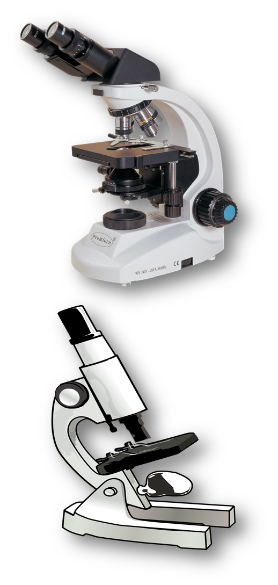

Microscopes
- Microscopes, are tools that we use to see things much too small to see with just our eyes. We say that these tiny objects are microscopic.
- Microscopes were first introduced in the 1590's and have
been greatly improved since then. Now microscopes are a staple in
the world of modern science. We use many different types of microscopes,
here are two of the major types that we use to look at cells:
- Optical Microscopes: uses light to allow viewer to see down to objects comparable in size to the wavelength of visible light (around 550 nanometers).
- Electron Microscopes: use electron beams to resolve images 10, 100, and even 1000 times smaller than light microscopes.
